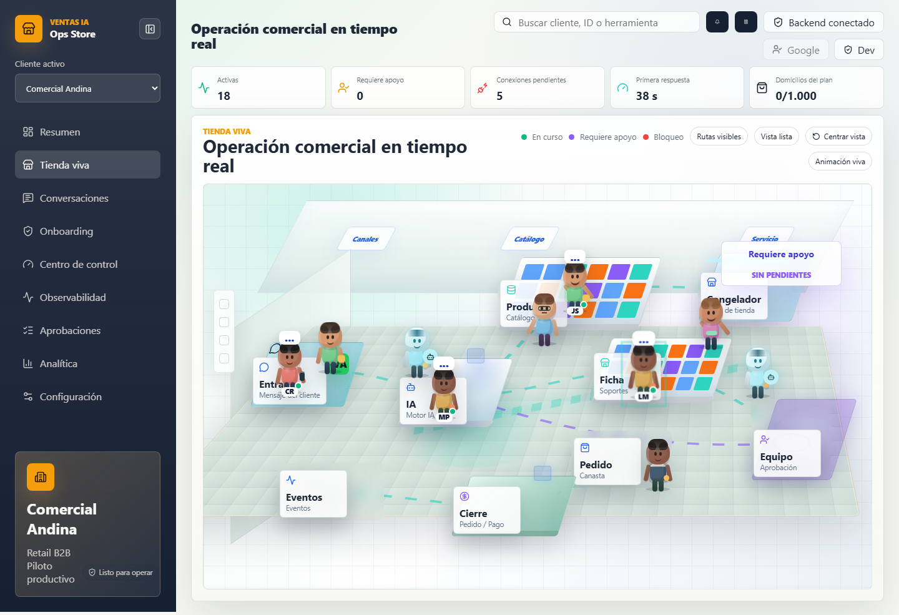
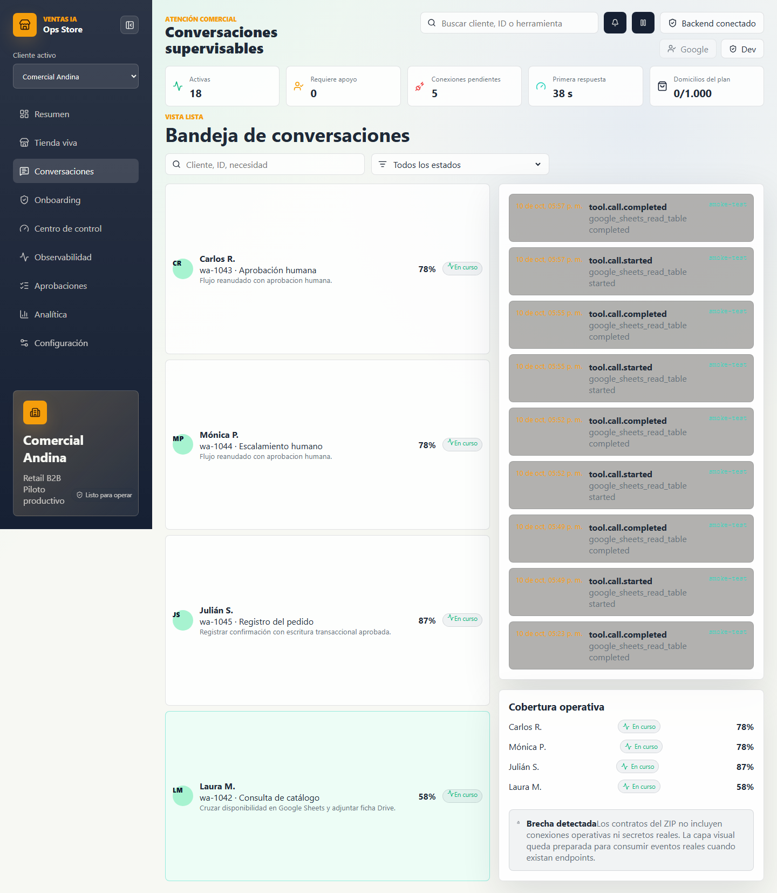
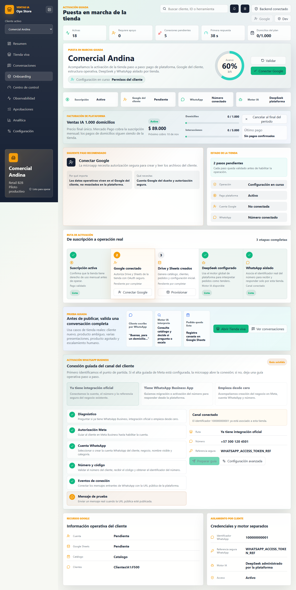
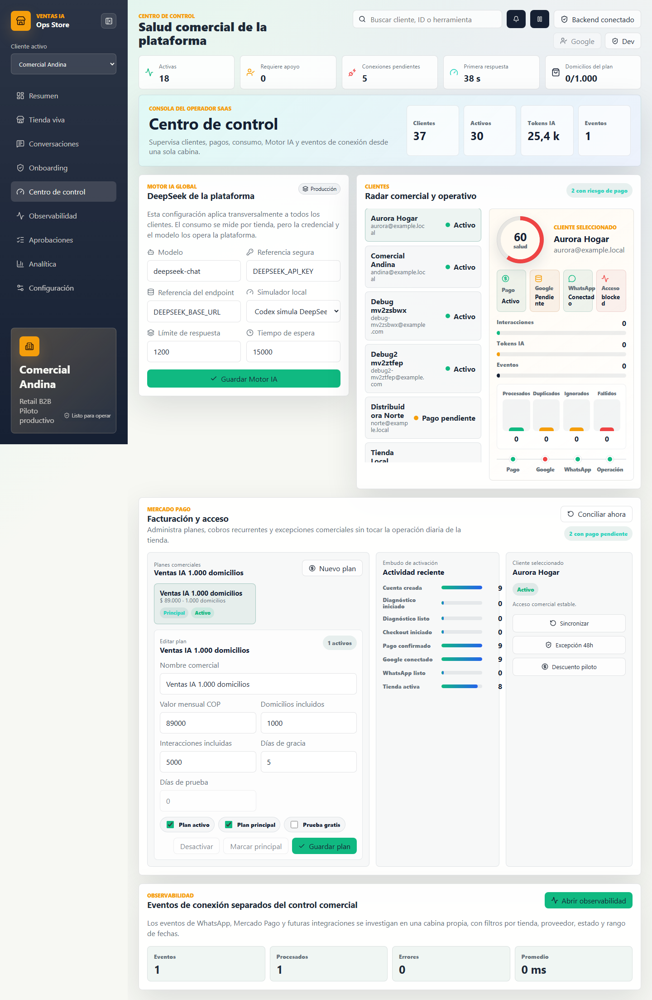

Un agente IA consulta catalogo, arma pedidos, registra clientes y escala al tendero cuando hace falta criterio humano.

El tendero lee mensajes, recuerda precios, valida stock, pide direccion, confirma pago y prepara pedidos al mismo tiempo.
Ventas IA combina agente comercial, Google Sheets, control humano y tableros SaaS en una sola experiencia.
La tienda se ve como una operacion viva: conversaciones, zonas, casos agrupados y alertas humanas.
El agente infiere productos, busca similares, valida con herramientas y pregunta cuando falta informacion.
El tendero puede revisar la conversacion, abrir WhatsApp y resolver solicitudes sin perder el contexto del pedido.


El cliente paga, conecta Google, crea Drive/Sheets, configura WhatsApp y prueba la operacion antes de publicar.
La plataforma permite ver tiendas activas, pagos, consumo, estado de Google/WhatsApp, errores y Motor IA.
Los numeros corresponden a datos de prueba locales del tablero actual.

La plataforma cobra por uso de Ventas IA. WhatsApp Business/Meta lo paga cada cliente por separado.
El repo ya cubre backend, frontend, agente, Google, WhatsApp contract-first, Mercado Pago contract-first, PostgreSQL y pruebas locales.
El objetivo del piloto es validar calidad de respuesta, flujo de pedido, handoff humano y adopcion operativa antes de ampliar a mas tiendas.